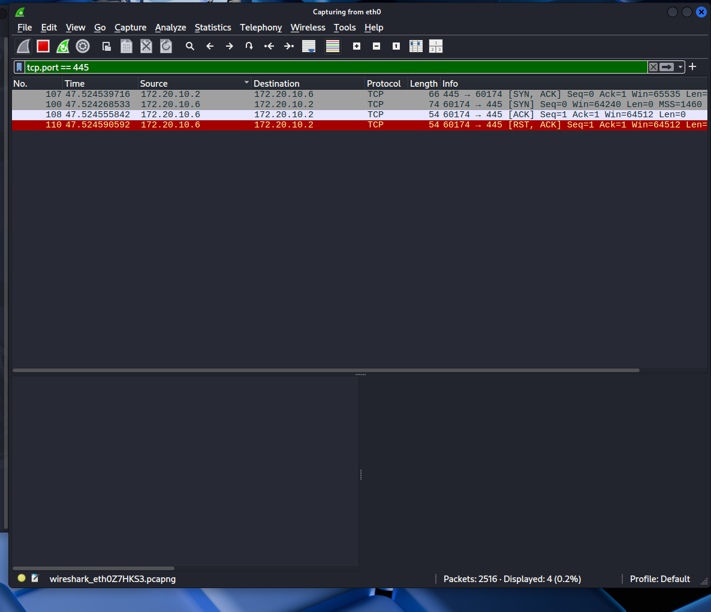
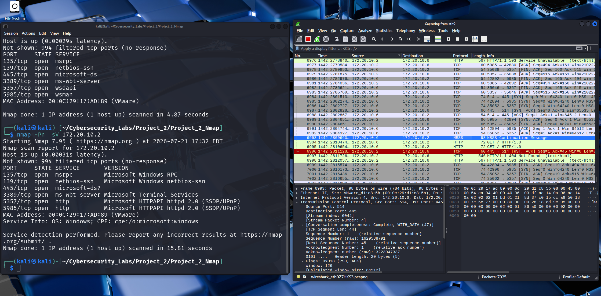
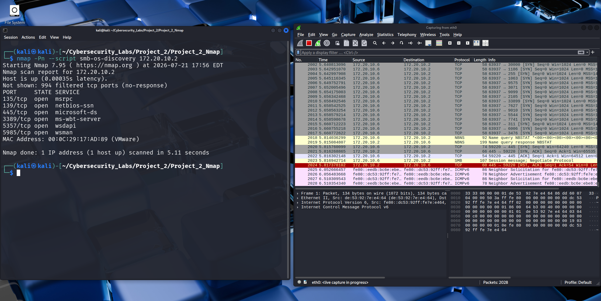
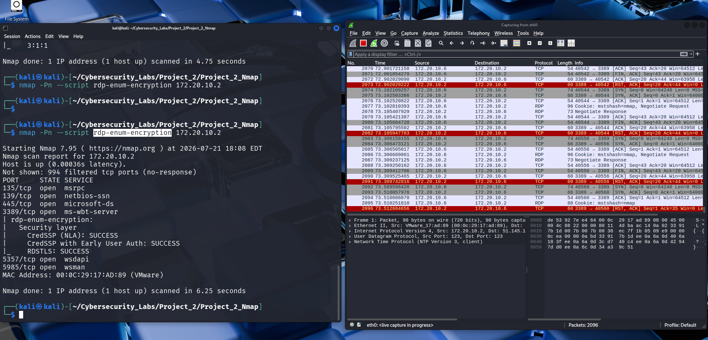
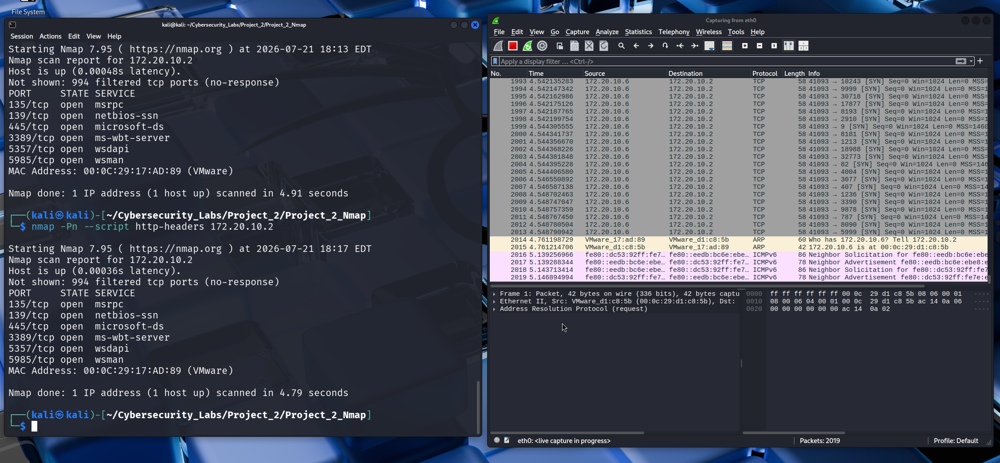

This project demonstrates how I used Wireshark to validate the results obtained from Nmap during a Windows Server 2019 enumeration exercise. Rather than relying solely on automated scanning, I captured and analysed network traffic to verify exactly what occurred during SMB communication.
One of the most important lessons I have learned during my cybersecurity journey is that running security tools is only the beginning. Professional analysts validate important findings by examining packet-level evidence. This project combines Nmap enumeration with Wireshark packet analysis to understand how Windows Server services communicate across the network.
I created this home lab to strengthen my understanding of network protocols and to develop practical packet analysis skills. The objective was to move beyond simply reading scan results and instead understand the actual network traffic that produced those results.
One of the biggest lessons I learned during this project is that running a security tool is only the beginning. The real value comes from understanding why a tool produced its results and verifying those findings yourself.
During the investigation I focused on the SMB service running on my Windows Server 2019 virtual machine. Using Kali Linux, I combined Nmap enumeration with Wireshark packet captures to understand exactly what was happening on the network.
My first attempt used an SMB security script that failed during protocol negotiation. Rather than assuming the target machine was misconfigured, I treated the failure as part of the investigation and continued troubleshooting using a different approach.
After switching to the appropriate SMB2 script, Nmap successfully identified SMB 3.1.1 and reported that message signing was enabled but not required.
Instead of accepting the scanner's output, I opened the packet capture in Wireshark and examined the SMB negotiation packets. The packet-level evidence confirmed the Nmap findings, demonstrating the importance of validating automated scan results through direct protocol analysis.
The screenshots below demonstrate the packet analysis process and how Wireshark was used to validate network communications observed during the Windows Server enumeration exercise.





This project strengthened my practical understanding of packet analysis, protocol behaviour and evidence-based security investigations. By combining Nmap with Wireshark, I developed a deeper understanding of how network services communicate and how professional analysts validate scan results using real packet captures.